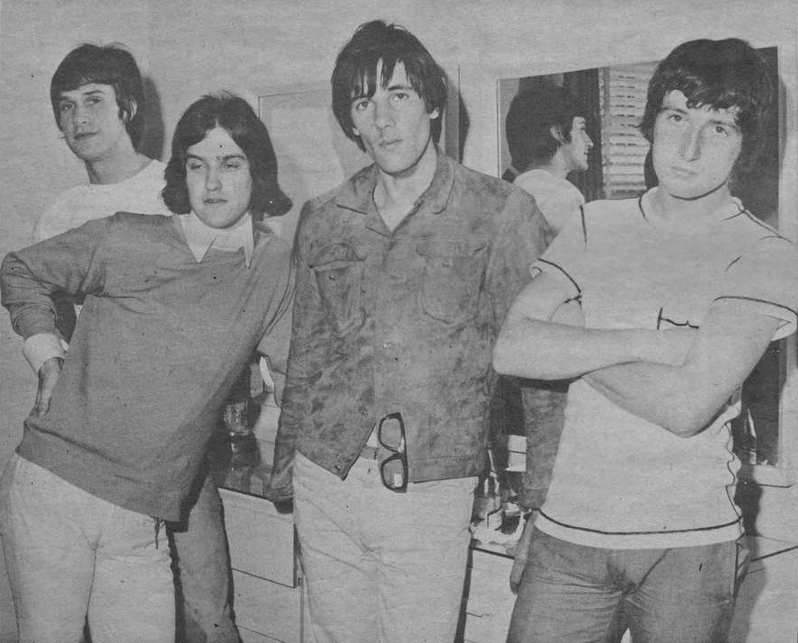

"You Really Got Me" almost reached the public sounding completely different.
Ray Davies hated the first finished version so much he threatened to quit music rather than release it.
What fans know today is the fight he won instead.

Table of Contents
- The Version Ray Davies Refused to Release
- How They Forced Pye to Let Them Re-Record
- The Jimmy Page Myth That Wouldn't Die
- FAQ
The Version Ray Davies Refused to Release
Ray Davies wrote the song, and the band first recorded it at Pye Studios with producer Shel Talmy.
That version came back polished and echoey, closer to a Phil Spector wall-of-sound record than the raw song Davies had in his head.
"I'd Leave the Music Business First"
Davies later said he refused to let that version reach the public at any cost.
He told an interviewer he would leave the music business entirely before writing another song like it, if that take was the one people heard.
How They Forced Pye to Let Them Re-Record
Pye Records wanted to release the finished single and move on.
The Kinks had a piece of leverage most new bands didn't.
A Publishing Loophole Won the Fight
Their publisher, Kassner Music, had not yet signed over the song's mechanical reproduction rights to Pye.
That meant the label legally couldn't release the record without the band's cooperation.
Pye backed down, and the band re-recorded the song at IBC Studios in London in July 1964, again with Talmy producing.
Session drummer Bobby Graham played on the released version, not the band's usual drummer, Mick Avory.
Dave Davies played his slashed-amp riff and the guitar solo, cut in a single take.
The Jimmy Page Myth That Wouldn't Die
A persistent rumor claims a young, pre-fame Jimmy Page played the guitar solo instead of Dave Davies.
Page did work as a session guitarist on other early Kinks recordings around this period.
Both Talmy and Dave Davies have repeatedly and specifically denied that Page played on this particular track.
Talmy has stated flatly that Davies played the solo himself, in one take.
"You Really Got Me" reached number one in the UK in September 1964.
It climbed to number seven on the Billboard Hot 100 in the US that November, and its distorted riff is widely cited as a direct blueprint for hard rock and heavy metal.
FAQ
Why did they refuse to release the first version?
Ray Davies felt the original Pye recording sounded too polished and echoey.
It was closer to a Phil Spector production than the raw song he'd written.
How did they force a re-record?
Their publisher hadn't yet signed over mechanical reproduction rights to Pye.
That let the band legally block release until the label agreed to a new take.
Did Jimmy Page really play on it?
No.
Producer Shel Talmy and guitarist Dave Davies have both said Davies played the solo himself, in one take, despite the persistent myth.
How did it perform on the charts?
It reached number one in the UK in September 1964.
It climbed to number seven on the Billboard Hot 100 in the US that November.
Winning that fight over a single take shaped everything The Kinks became afterward.
It's one of the foundational records of the British Invasion & Beat Music era.
Back to the 1960smusic.net homepage to explore every genre of the decade, starting with "You Really Got Me" itself.